AI already solves well-posed problems, where the question, the model and the measure of success are fixed. Discovery is open-ended, and it is harder in four ways:
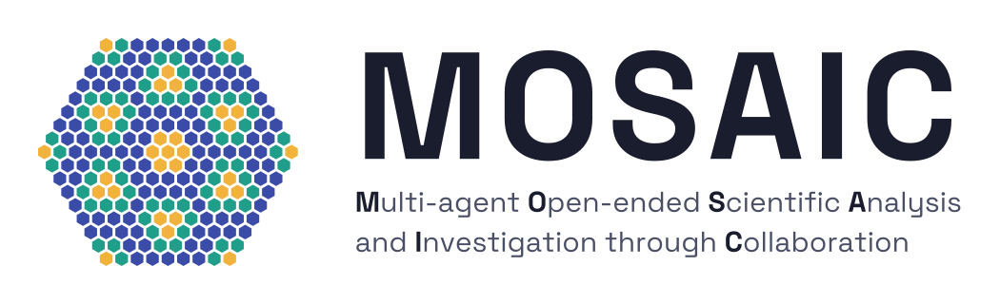
TL;DR MOSAIC is a swarm of identical AI agents with no coordinator. Searching flat bands beyond ideal quantum geometry, it found ν = 1/3 Laughlin states whose gaps are 11.5× and 15.8× those of their ideal-geometry parents, which isolated agents with the same tools did not reach.
A replay of two campaigns on model 1, built from the agents' logs. Each dot is an evaluation request, each arc a citation or a direct message, and each entry in the feed a post on the shared board. The highlighted path shows the relay of agents that built the best band. In the 18-agent replay, one node stands for the best of 18 independent agents, which had the same brief, tools and total quota but no board; the 48-agent replay shows that campaign's two isolated agents. Press play, drag the timeline, or tap an agent or a post for details.
Can AI discover new physical principles to overcome long-standing challenges in physics?
AI already solves well-posed problems, where the question, the model and the measure of success are fixed. Discovery is open-ended, and it is harder in four ways:
We test this on a long-standing problem in condensed-matter physics: the small energy gaps of fractional Chern insulators, which limit how robust they are. Bands with ideal quantum geometry are usually taken as the best setting for these states, and whether leaving that limit can do better was an open question.
MOSAIC has no coordinator. Every agent receives the same brief and decides for itself what to try, whose results to build on and when to stop. Four parts make this work.
| The open question | Can that momentum dependence raise the Laughlin gap above the parent's, robustly across cluster sizes? Is the gain a new mechanism, or only the changed density? |
| A bounded space | Only the momentum-dependent deformation is free.Inside a fixed box of amplitude and phase coefficients, the method is the agent's choice. |
| A strict referee | A gain on one cluster is not a result.The score is R = Δ / Δparent, with Laughlin-phase gates on 21 sites, then 4×6, then 5×6. |
| Scientific norms | Numbers come only from result.json. Negative results are first-class. When the physics is unclear, ask. |
| Critique and diversity | About one post in five should be a critique of another agent's claim. Watch for herding. |
| Self-organization | Nobody assigns you a role or a region; the swarm organizes itself through the board. |
Excerpts from the charter and campaign brief. The full prompts are in the Supplementary Information and in the repository.
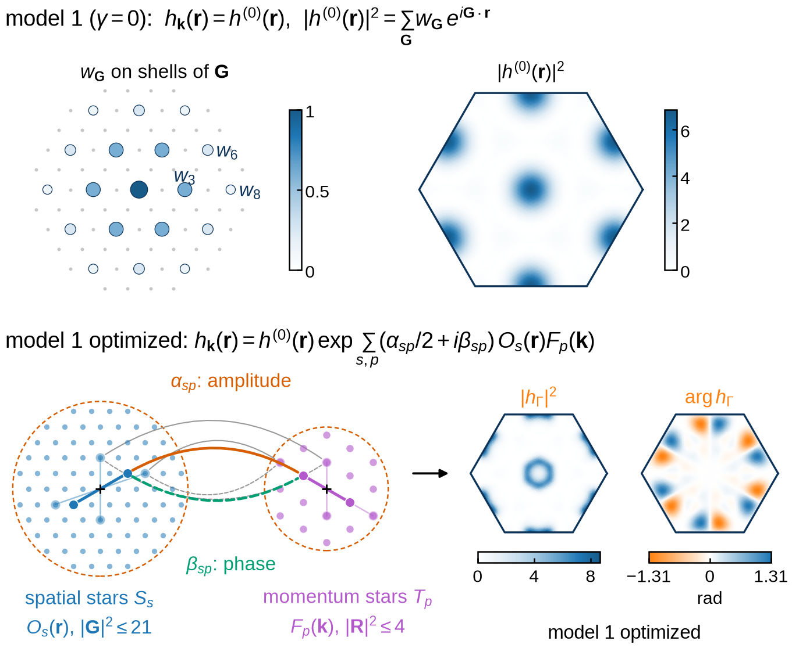
Design. A Claude Code agent, working with a physicist, proposed the momentum-dependent family of C = 1 bands, its Fourier parametrization and the search boundary.
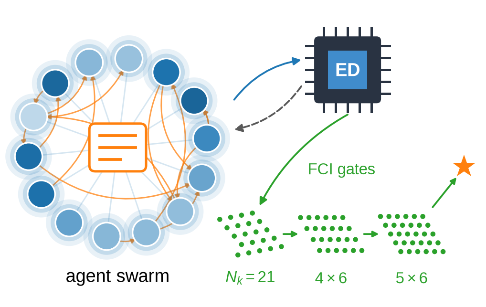
Search. Swarms of 5 to 48 agents searched this space autonomously, with no human intervention during the search.
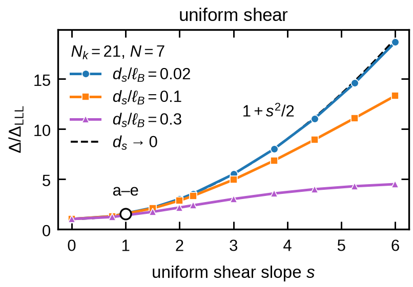
Explain. GPT-6 Pro, working with a physicist, read the numerical results and developed the theory of sheared Landau levels.
A flat band with Chern number C = 1, filled to one third, can host a fractional Chern insulator, the lattice version of the ν = 1/3 Laughlin state. How robust it is depends on the many-body gap Δ between its three degenerate ground states and everything above them. The lowest Landau level has ideal quantum geometry, and so do the bands that join it to the parents we start from (γ = 0 in the figure).
The agents may leave this line. A momentum-dependent envelope γ(k, r) deforms each parent, with amplitude terms αsp and phase terms βsp built from spatial stars Os(r) and momentum stars Fp(k). The coefficients live in a fixed box, the search boundary. A band scores R = Δ / Δparent, and it counts only if exact diagonalization confirms a Laughlin state on all three search clusters, with 21 sites, 4×6 and 5×6. Rmin is the smallest of the three. Model 1 and model 2 are two different parents.
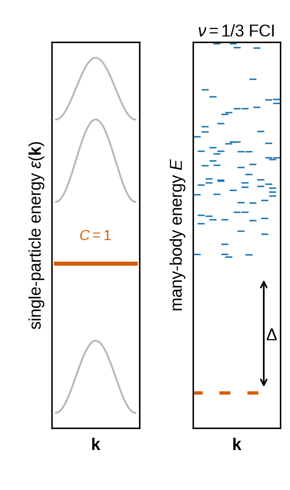
A C = 1 flat band (left) and the many-body spectrum at ν = 1/3 (right). The gap Δ separates the threefold ground states from the rest.
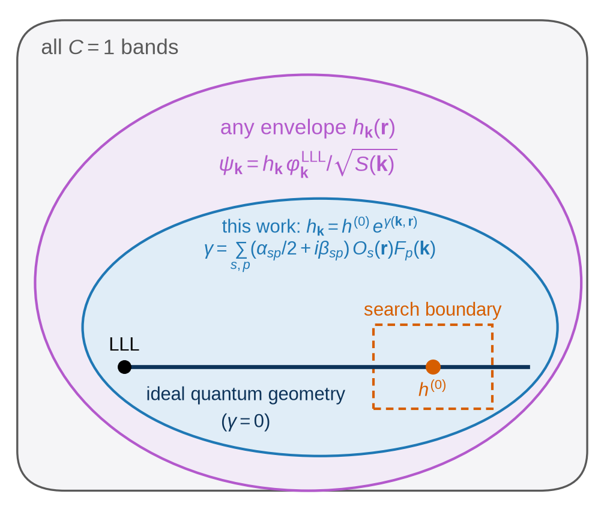
The bands in play. The line of ideal quantum geometry runs from the lowest Landau level (LLL) to the parent h(0). This work adds the momentum-dependent envelope γ, and the dashed box marks the search boundary around the parent.
Swarms of 5, 18 and 48 agents searched each model without human intervention. Each campaign also ran two isolated agents with the same brief and tools but no board.
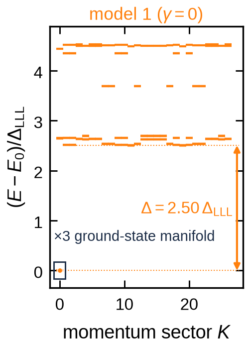
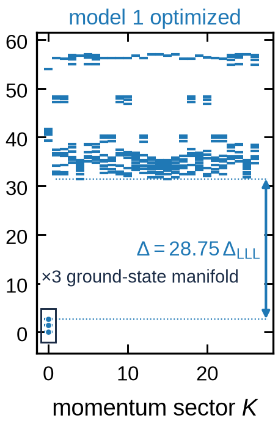
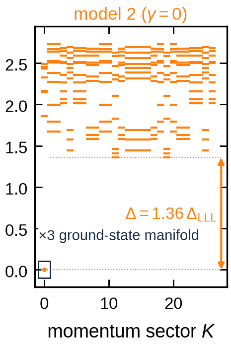
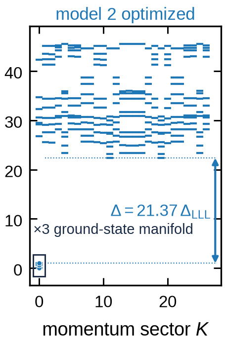
Exact-diagonalization spectra on a 27-site cluster with 9 electrons, which was never used during the search. The threefold Laughlin ground states (boxed) survive; arrows mark the gap Δ, in units of the lowest-Landau-level gap ΔLLL.
| Gap at γ = 0 (ideal geometry) | Gap of the optimized band | Enhancement | |
|---|---|---|---|
| Model 1 | 2.50 ΔLLL | 28.75 ΔLLL | 11.5× |
| Model 2 | 1.36 ΔLLL | 21.37 ΔLLL | 15.8× |
These gaps also exceed the benchmark M2(0) ΔLLL of the ideal-geometry framework, so a sharper charge density alone cannot explain them.
On the search clusters, the strongest swarms reached Rmin = 10.8 on model 1 and 16.3 on model 2, while the six isolated agents on model 1 reached 1.1 to 3.2. In the 18-agent campaign on model 1 we find three mechanisms.
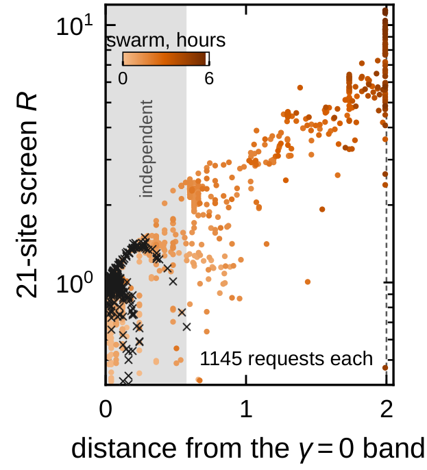
Breadth. In the first two hours the swarm ran 38 distinct search strategies, against 6 for the two isolated agents together.
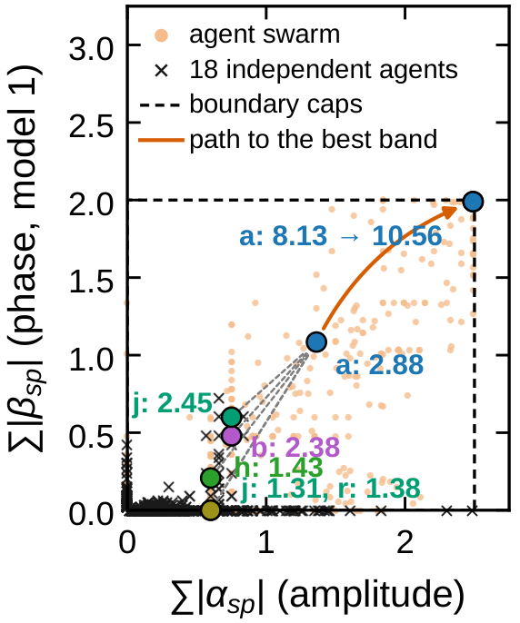
Recombination. The large gains need amplitude and phase terms tuned together. 45% of the swarm's requests changed both, against under 1% for the isolated agents.
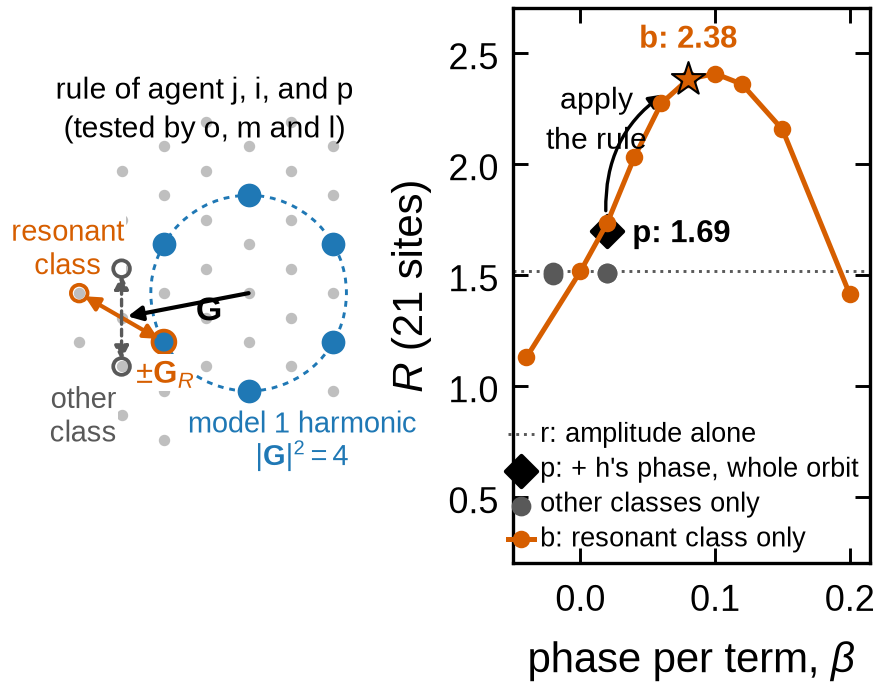
Shared insight. Agent b observed that only some terms help; j, i and p explained why with a selection rule; o, m and l tested it; b applied it, raising R from 1.69 to 2.38.
Best Rmin against the cumulative tokens of each arm: swarms of 5, 18 and 48 agents (solid) and the two isolated agents run alongside each swarm (dashed, same colour). Each swarm agent used fewer tokens than an isolated agent, about 25 million against 35 million in the 18-agent campaign on model 1, but a swarm as a whole uses more. In that campaign the swarm had reached Rmin = 1.32 by the time it had spent the isolated agents' whole budget of 70 million tokens, and its large gains came after that. About 97% of these tokens are re-reads of each agent's own context. Claude Code caches the unchanged part of that context, so these re-reads are counted as tokens but billed far below fresh input. At Opus 5.5 API prices the 18-agent swarm on model 1 would cost about $170, roughly $9 per agent, against about $1,800 if every token were fresh input.
The swarm's bands change many properties at once, so GPT-6 Pro asked for the simplest band that keeps the density and the Berry curvature uniform. It proposed sheared Landau levels: every lowest-Landau-level orbital is sheared, (x, y) → (x, y + s x). The map preserves area, so only the quantum metric grows. For short-range interactions the gap obeys Δ / ΔLLL → 1 + s²/2, exact as ds → 0 and unbounded in s within a single band, and exact diagonalization confirms it. The same mechanism, a steeper two-electron wavefunction at contact, also explains the swarm's bands.
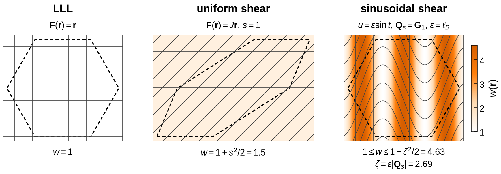
The lowest Landau level, a uniform shear and a sinusoidal shear of its orbitals.
The gap against the uniform shear slope s. Exact diagonalization follows 1 + s²/2 as ds → 0.
What did we learn about open-ended discovery in physics?
AI designs modelsAI explores and finds anomaliesAI develops physical theories
Our three-step approach, with AI in each step and physicists alongside.
The repository contains the MOSAIC framework (broker, board, the agents' swarm command, charter and campaign briefs), the GPU exact-diagonalization solver used as the referee, built on MomentumED.jl, and the data behind every figure, including the full board, mail and requests of each campaign. It is released under the MIT License.
uv run pytest tests/swarm -q
MOIRE_ED_BACKEND=gpu julia --project=julia julia/ed_solver.jl \
--config data/bands/model1_optimized_5eda.json --out 5eda.json@article{zhang2026mosaic,
title = {Agentic Swarms Discover Enhancement of Fractional
Chern Insulator Gaps Beyond Ideal Quantum Geometry},
author = {Zhang, Yitong and Xu, Changwen and Li, Andrew Boshi and
Sarkar, Siddhartha and Sun, Kai and
Viswanathan, Venkatasubramanian},
year = {2026}
}The arXiv identifier will be added when the preprint is posted.